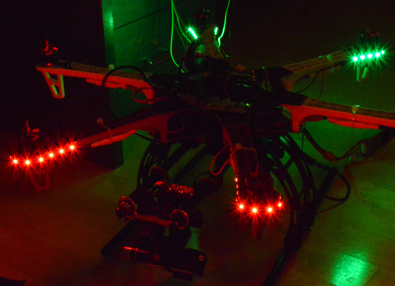

Willkommen beim Naza LED Projekt.
Der DJI Flamewheel F550 hat keine Beleuchtung. Der Kopter hat eine LED, welche den Status der Naza anzeigt, z.B. Flugmodus, Anzahl sichtbarer Satelliten, oder zu wenig Spannung im Akku.
Im Kopterforum.de kam dazu Ende 2013 von @Schnubbi1985 die Frage auf, ob man die Blinksignale der LED nicht abgreifen und z.B. an LED Strips unter dem Kopter weitergeben kann. Er hat bald darauf ein Projekt gefunden, welches dies prototypisch umgesetzt hat.
Daraufhin hat eine rege Diskussion angefangen, welche in bislang drei Umsetzungen dieser Idee resultiert hat. Zum einen hat @Schnubbi1985 eine Lösung gebaut, welche bereits an seinem Kopter funktioniert. Diese Lösung basiert auf einem Arduino Nano, mit selber designter Platine. Weiter ist die existierende Lösung MWCLightRGB um diese Funktion erweitert worden.
Dazu ist mein Projekt entstanden, welches auf dieser Seite vorgestellt wird.
Ein erstes Projekt (noch vor der obigen Diskussion im Kopterforum) hatte zum Ziel, eine schaltbare Beleuchtung ähnlich der des Phantoms einzubauen. Dazu sollten LED Streifen an die Arme geklebt werden und mit Hilfe eines Graupner Schaltmodules vie Fernsteuerung ein- und ausgeschaltet werden. Das Projekt ist nicht sehr weit gediehen, da mir letztlich der Nutzen nicht mehr so klar war.

Was ich wollte war nicht eine statische Beleuchtung, sondern eine der Flugsituation angemessene, dynamisch schaltbare Beleuchtung.
Gewünschte Eigenschaften der Beleuchtung
Die neue Beleuchtung soll folgende Eigenschaften aufweisen:
- Sie soll sehr hell sein
- Man soll mit der Beleuchtung vorne und hinten unterscheiden können
- Man soll vom Boden her sehen, wie die Naza LED leuchtet / blinkt
- Für die Dämmerung oder die Nacht soll es weisse Landelichter geben
- Die Beleuchtung muss via Fernsteuerung geschaltet werden können
- Falls sich irgendetwas vom obigen als nicht so toll herausstellt soll man dies ohne Löten ändern können
Design
Um das obige umzusetzen braucht es einerseits "programmierbare" LEDs, also RGB LEDs, welche die Farbe beliebig wechseln können. Anderseits braucht es einen Mikroprozessor, um das ganze zu steuern. Der existierende Prototyp ist auf Arduino Basis entstanden. Deshalb wurde die folgende Hardware ausgewählt:
- Arduino als Steuereinheit (Arduino Uno für das Prototyping, Arduino Pro Mini für die gelötete Lösung)
- Adafruit NeoPixel LEDs: Dies sind Leuchtdioden in Streifenform oder 16 LEDs in Ringform angeordnet, welche individuell angesteuert werden können. Mehrere Streifen, Ringe etc. können verbunden werden. Alle LEDs des Verbundes werden dann durchnummeriert und sind immer noch einzeln steuerbar über eine einzige Steuerleitung. Ursprünglich wollte ich die Ringe verwenden und pro Motor einen Ring unten hinleben, aber leider passen die Ringe nicht gut auf die DJI Arme. Deshalb sind jetzt Streifen im Einsatz, mit einem zusätzlichen Ring in der Koptermitte.
- Bestehende Fernsteuerung war ein Graupner Hott System mit Empfänger GR-16. Das Projekt funktioniert damit, allerdings ist die Fernsteuerung unterdessen ersetzt mit einer Taranis X9D und Empfänger X8R. Am Arduino Code ändert sich nichts.
Lösung
Unterdessen ist die Lichtsteuerung fertig, eine kleine Demonstration ist hier zu sehen: http://youtu.be/up987QC-eiE
Laden des Source Codes
Source Code für dieses Projekt ist verfügbar via Github. So holt man sich eine Kopie:
$ cd dein_projekt_verzeichnis
$ git clone https://github.com/tinue/naza-led.git